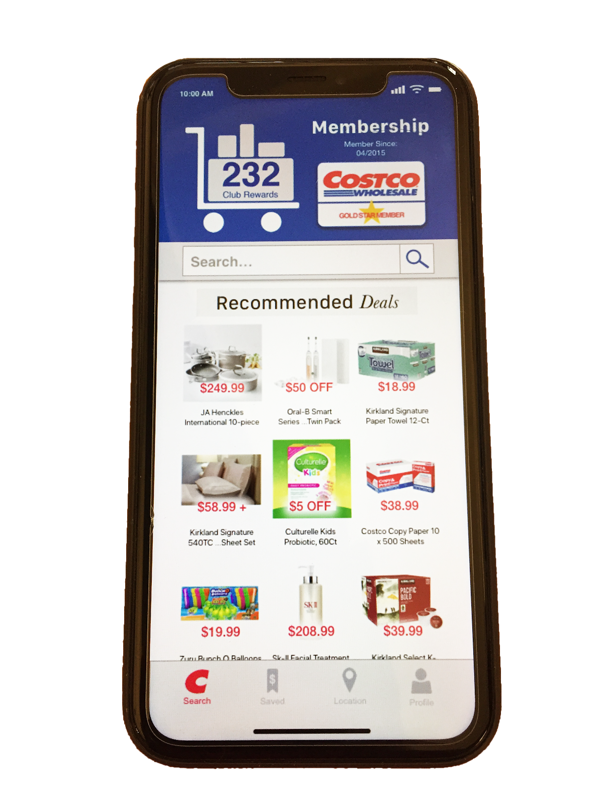

Costco App Redesign
Project Overview
Goal: This project was a conceptual redesign
of the Costco app. By implementing user research and user centered design
practices, the team would create an app that is more effective than the
current Costco App.
Team:
- Nate Folsom (me) — Interaction Designer
- Amber Barney-Nivon — User Researcher
- Kitty Kennedy — Visual Designer
Duration: Two weeks.
First Steps
I began by diving into the Costco app and then comparing it with other
shopping apps. In addition to Costco, the apps that I looked at were
Target, Sam’s Club, and Amazon.
I dug deep into the interactions and UI of each app, looking for
must-have features and design patterns for our redesign.
Based on findings from user research we came to the conclusion that
the most effective purpose of the Costco app would be strictly for locating
deals, coupons, and sales in order to draw more customers to the
brick and mortar locations.
Design Direction
Based on findings from user research we came to the conclusion that
the most effective purpose of the Costco app would be strictly for locating
deals, coupons, and sales in order to draw more customers to the
brick and mortar locations.
KPIs: The business impact of this redesign
would be monitored through an increase in memberships sold, decrease
in average time between store visits, and items sold after being saved
in-app by a customer.
Feature Prioritization
As a team, we discussed and then voted on features in order to determine
what would be in the MVP. The result that we arrived at
was that the app needed the ability to search for deals, browse deals
by category, save deals for later, and locate deals at a specific store.
Managing a current membership or purchasing a new one were also
deemed necessary.
Usability Tasks
Based on the features we selected, I wrote three tasks to
design the app interactions around and prototype.
- Find a deal and save it for later use
- Sign up for a new membership
- Find the saved item from earlier and reveal the
barcode for in-store checkout
Design Studio
Keeping the tasks in mind, I hosted a design studio with the team.
We sketched out the home screen in order to rapidly ideate our UI
elements and what features to put where. We then discussed our sketches
and combined them into one master sketch incorporating everything we
found was effective.
Using the results of the design studio, I started wireframing
the screens in Sketch.
In order to make sure I wireframed every necessary screen,
I wrote screen flows for each task. Each screen flow is a list of
the steps that the user would go through to complete each task. By
listing out these steps, I could see which screens they would be
visiting and if there were different display states needed for any of
these screens.
This quick and dirty wireframe served as the basis for the
digital prototype.

The first step in turning the wireframe into a prototype was
updating any necessary UI elements through the use of symbols.

Next I wrote task scenarios in collaboration with the user
researcher, which provided specific details for each task.


Finally, I uploaded my screens to InVision and added hotspots
for usability testing.
I also shared the prototype with the visual designer so that
they could create screen mock-ups for our presentation.
After the user researcher had completed testing with a
few people, we met as a team to discuss findings and simple solutions.

